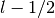
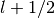

cmspy.psp package¶
Subpackages¶
Submodules¶
cmspy.psp.kb module¶
-
cmspy.psp.kb.calc_javg(beta, dij, r, beta_has_r_factor=False)¶ Separate the fully-relativistic Kleinman-Bylander potential into scalar relativistic and spin-orbit parts according to the procedure given in PhysRevB.47.4238
Parameters: beta : dict
Projectors for each angular momentum component. The dict keys are the angular momentum components. beta[l][0] gives the  component, while beta[l][1] gives the  component
dij : dict
Kleinman-Bylander energies for each angular momentum component. The layout matches that of beta
r : ndarray
radial grid
beta_has_r_factor : bool
indicate whether or not the beta functions include the factor of r
Returns: V_ion : dict
Projectors for the scalar-relativistic part of the pseudopotential. The dict keys are the angular momentum components.
V_so : dict
Projectors for the spin-orbit part of the pseudopotential. The dict keys are the angular momentum components.
-
cmspy.psp.kb.compute_beta_SBT(beta, r, Kvectors, beta_has_r_factor=False)¶ Compute the spherical Bessel transform (SBT) of the radial part of a projector
-
cmspy.psp.kb.compute_beta_planewave_matrix_elements(beta, r, Gvectors, kpoint=None, beta_has_r_factor=False)¶ Compute the inner product of a projector and a planewave